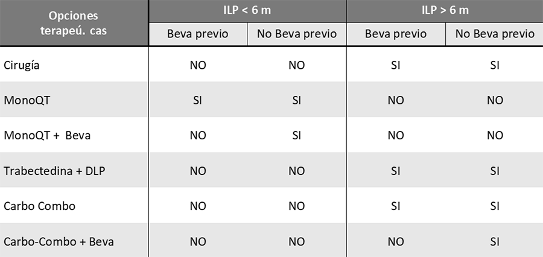
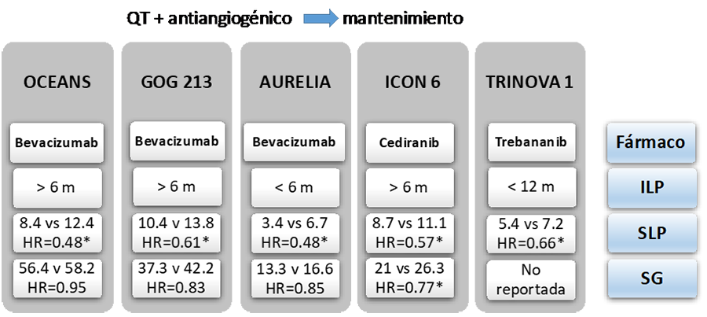
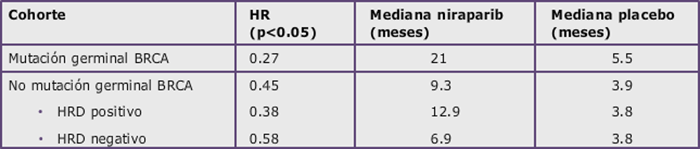
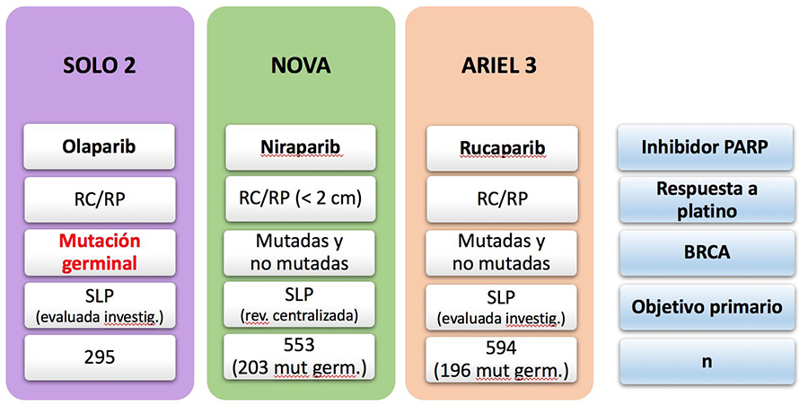
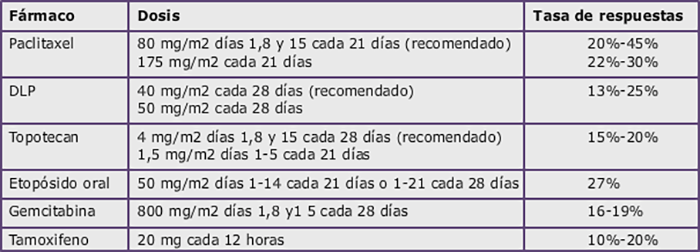
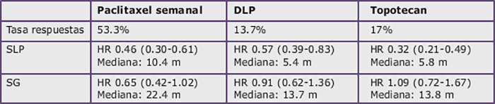

Cáncer de Ovario

3.11 Tratamiento de la enfermedad recurrente
A pesar del tratamiento quirúrgico y sistémico aproximadamente el 75% de las pacientes con estadio III y el 95% de las pacientes con estadio IV sufrirán una recaída, en la que habitualmente no será posible la curación. La elevación del Ca125 es un marcador sensible para la detección de la recuerrencia y puede preceder a la recaída clínicamente detectable con una media de 3 a 6 meses. De acuerdo al Gynecologic Cancer Intergroup (GCIC) se define como progresión por Ca125 una elevación 2 veces por encima del límite superior de la normalidad. No obstante, la decisión de iniciar tratamiento basada únicamente en el Ca125 no impacta en la supervivencia global y produce un deterior en su calidad de vida. Los criterios aceptados para iniciar el tratamiento son los siguientes:
Evidencia radiológica de enfermedad
Incremento del Ca125 (de acuerdo al criterio del GCIC, expuesto anteriormente) acompañado de síntomas compatibles con progresión tumoral.
Clasificación de la recaída
El intervalo libre de platino (ILP), es el tiempo que transcurre desde el fin del último tratamiento con platino al momento de la recaída. En función del tiempo trasncurrido se clasifican en:
ILP menor de 6 meses, tradicionalmente llamada recaída “platino-resistente”. La llamada recaída “platino-refractaria”, aquella que se produce durante el tratamiento con platino o en las 4 semanas siguientes a su finalización, se ha incluido habitualmente dentro de la “resistente”, aunque se asocia a un peor pronóstico.
ILP mayor de 6 meses, tradicionalmente llamada recaída “platino-sensible”, dentro de la cual se considera otro subgrupo con un ILP entre 6 y 12 meses (que ha sido llamado “parcialmente sensible a platino”).
A pesar que esta definición es habitualmente utilizada, tanto en la práctica clínica diaria como en la mayoría de ensayos clínicos, en la actualizada esta siendo cuestionada. En el último consenso del GCIG del año 2015 se sustituyó el concepto de ILP por el de intervalo libre de tratamiento (Treatment- free interval, TFI), que se dividió a su vez en intervalo libre de tratamiento con platino (TFIp), con no platino (TFInp) o con fármaco biológico (TFIb), como el caso del bevacizumab.
Factores pronósticos de la recaída
Existen diversos factores pronósticos que han sido descrito en la recaída del cáncer de ovario:
ILP: principal factor pronóstico y predictivo. La recaída “platino resistente” suele asociarse a una supervivencia global inferior a los 12 meses, mientras que en la recaída “platino sensible” suele oscilar entre los 24 y los 36 meses.
Tasa de respuestas en la recaída según el intervalo libre de platino.
Carga tumoral: cuanto mayor sea la extensión de la recaída peor será el pronóstico. La afectación visceral, aunque poco frecuente, también se asocia a peor pronóstico.
Subtipo/grado histológico: el carcinoma seroso de alto grado y el carcinoma endometrioide son más quimiosensibles y tienen mejor pronóstico que el carcinoma células claras y el mucinoso.
Mutación BRCA: conlleva una mayor sensibilidad a diversos fármacos y un mejor pronóstico.
Posibilidad de citorredución secundaria completa.
Estado general.
Factores pronósticos establecidos en la recaída del cáncer de ovario.
Tratamiento
CITORREDUCCIÓN SECUNDARIA
En la recaída platino-resistente no se suele contemplar la opción quirúrgica, pero en la recaída platino-sensible sí se debería valorar la posibilidad de una citorreducción secundaria en pacientes seleccionadas.
De acuerdo a los datos presentados en ASCO 2017 del estudio DESKTOP III, las pacientes con una primera recaída con ILP > 6 meses y que presentan los criterios definidos por el grupo cooperativo alemán AGO (ECOG 0, ascitis ≤500 ml y una citorreducción primaria completa), tendrán beneficio de una citorreducción secundaria en términos de SLP, sobre todo si ésta es completa. El estudio todavía no ha sido publicado y estamos a la espera de los resultados en SG.
Por otro lado, en el estudio GOG 213 presentado en ASCO 2018 por Coleman RL et al, en el cual se randomizaron a las pacientes a cirugía seguida de quimioterapia o únicamente quimioterapia, un doblete con platino (Carboplatino + Paclitaxel o Gemcitabina) con o sin bevacizumab, no se encontraron diferencias en SG.
FACTORES A CONSIDERAR PARA LA ELECCIÓN DEL TRATAMIENTO SISTÉMICO DE LA RECAÍDA
Los factores a considerar para la elección del tratamiento los podemos dividir desde un punto de vista práctico en: dependientes del tumor, dependientes del paciente y dependientes del equipo médico/hospital.
Factores dependientes del tumor:
El intervalo libre de tratamiento es un factor fundamental a la hora de decidir el esquema de tratamiento, como veremos en la siguiente tabla.
El subtipo histológico, aunque en la actualidad no disponemos de tratamientos específicos para determinados subtipos como el células claras, el mucinoso y el seroso de bajo grado, sabemos que son más resistentes a la quimioterapia empleada en el cáncer de ovario.
La carga tumoral, la localización de la recidiva y la presencia de ascitis.
Las características biológicas del tumor. La mutación en BRCA es el biomarcador pronóstico y predictivo de respuesta más importante en el cáncer de ovario.
Opciones de tratamiento sistémico en la recaída de cáncer de ovario (Redondo A et al. Revista Ginecología Oncológica).
Factores dependientes del paciente:
El estado general es un factor fundamental no sólo para elección terapeútica, sino para establecer la indicación de tratamiento sistémico.
La edad y comorbilidad. La edad no debería condicionar la elección del tratamiento sistémico, siempre que el estado general de la paciente sea bueno. Sin embargo, hay que tener en cuenta que las pacientes ancianas pueden tener una mayor toxicidad a la quimioterapia.
Número de líneas de tratamiento y fármacos recibidos. El retratamiento con carboplatino incrementa el riesgo de reacciones de hipersensibilidad al mismo, llegando a ser de un 44% en pacientes que reciben una tercera línea de platino.
Toxicidad residual a tratamientos previos.
Preferencias y expectativas de la paciente. Cuando disponemos de varias opciones terapeúticas con una eficacia similar, lo más adecuado sería informar a la enferma de las mismas, explicando diferencias en posología y en toxicidad.
Mutación germinal en BRCA.
Factores dependientes del equipo médico/hospital:
Opciones de citorreducción secundaria. La posibilidad de una citrorreducción secundaria depende en gran medida del equipo quirúrgico de cada centro.
Preferencias de tratamiento por parte de cada oncólogo.
Limitaciones terapeúticas extramédicas, como pueden ser las diferencias de indicación que en ocasiones existen entre agencias reguladoras.
TRATAMIENTO DE LA RECAÍDA CON ILP > 6 MESES (“PLATINO SENSIBLE”)
Combinaciones de carboplatino
En la recaída “platino-sensible” la recomendación general es reutilizar esquemas basados en platino. La combinación de carboplatino-paclitaxel ha mostrado beneficio en SG frente a carboplatino en monoterapia. Sin embargo, efectos secundarios como la alopecia, que ocurre en la práctica totalidad de las pacientes, y la neurotoxicidad influyen en la calidad de vida de las pacientes. Por ello, se han desarrollado dobletes con carboplatino y otros fármacos, como DLP o gemcitabina, en los que la alopecia es excepcional, pero que tienen otros posibles efectos adversos. Actualmente se considera que las combinaciones de carboplatino con paclitaxel, DLP o gemcitabina tendrían una eficacia similar, por lo que la elección de uno u otro esquema se realizaría principalmente por el perfil de toxicidad y preferencias de la enferma.
Combinaciones sin carboplatino en ILP 6-12 meses
Cuando el ILP se sitúa entre 6 y 12 meses se puede contemplar la combinación sin platino trabectedina-DLP, en base a los resultados del ensayo fase III OVA 301, que mostraron un incremento de la SLP en el brazo de la combinación frente a DLP en monoterapia. Los subanálisis realizados en el subgrupo de pacientes con sensibilidad intermedia (ILP de 6-12 meses) han permitido generar hipótesis para nuevos ensayos clínicos. En esta subpoblación se observó no solo una mejoría de la SLP sino también de la SG (con un incremento de la mediana de aproximadamente 6 meses). Además, el tiempo hasta el siguiente tratamiento con platino en las pacientes tratadas con la combinación fue claramente superior, así como la SG desde la reintroducción de platino, tras la progresión al fármaco del ensayo (con un incremento de la mediana de aproximadamente 9 meses). Esta observación, junto a resultados de otros estudios de investigación básica, generó la hipótesis de que los tumores previamente tratados con trabectedina-DLP podrían aumentar su sensibilidad a tratamientos posteriores con platino. Actualmente, está abierto un ensayo fase III denominado INOVATYON que compara la administración de trabectedina-DLP frente a carboplatino-DLP, en pacientes con recaída y un ILP de 6-12 meses.
Recientemente se han comunicado los resultados del estudio italiano MITO 8, en el que se comparaba un esquema basado en platino frente a un esquema sin platino en pacientes con recaídas e ILP 6-12 meses. En este estudio, en el que el tratamiento sin platino elegido por los investigadores fue en más del 90% DLP en monoterapia, el brazo de tratamiento con platino fue más eficaz. Por tanto, en pacientes con ILP de 6-12 meses se deberá optar por una combinación de platino o por la combinación trabectedina-DLP (Figura 6). Las monoterapias sin platino se considerarían actualmente opciones subóptimas.
Antiangiogénicos
En la recaída también han sido estudiados los fármacos antiangiogénicos. Hay dos ensayos fase III en recaída platino sensible (Estudios Oceans y GOG 213) que evaluaron el efecto de añadir bevacizumab a la quimioterapia y su posterior mantenimiento. Los resultados fueron positivos en ambos, consiguiéndose aumentar la SLP, pero al igual que en los estudios en primera línea, sin beneficio en SG. Actualmente, se podría utilizar bevacizumab tanto en combincación con carboplatino y gemcitabina (Oceans), como con carboplatino y paclitaxel (GOG 213).
Además, en ESMO 2018 se ha presentado el estudio AGO/OVAR 2.21 con beneficio en SLP estadísticamente significativo para la combinación de bevacizumab con carboplatino y doxorrubicina liposomal (13.3 meses) frente a la combinación de bevacizumab con carboplatino y gemcitabina (11.7 meses). Asimismo, en el contexto de una primera recaída platino sensible, se han presentado en ASCO 2018 los resultados del estudio Mito 16B, en el cual se ha demostrado una mejoría de la SLP en pacientes tratados nuevamente con bevacizumab en combinación con quimioterapia, después de haberlo recibido en una primera línea. Por el momento, la combinación de bevacizumab con carboplatino y doxorubicina liposomal y el retratamiento, no han sido aprobadas.
En cuanto a otros agentes antiangiogénicos, se han realizado ensayos con trebananib y cediranib, el primero en recaídas tanto sensibles como resistentes (ILP menor de 12 meses), y el segundo en recaídas platino-sensibles. Trebananib mostró resultados positivos para SLP, pero poco relevantes clínicamente, mientras que el estudio de cediranib impactó tanto en SLP como en SG. Sin embargo, la importante toxicidad asociada a cediranib, principalmente digestiva, ha hecho que de momento este fármaco no haya sido aprobado para esta indicación.
Resumen de ensayos clínicos fase III con antiangiogénicos en la recaída del cáncer de ovario (*p < 0.05).
Inhibidores de PARP
Los tres inhibidores de PARP más estudiados como tratamiento de mantenimiento en el cancer de ovario son: olaparib, niraparib y rucaparib.
Olaparib: fue el primer inhibidor de PARP aprobado en Europa para HGSC como terapia de mantenimiento, tras una respuesta a un tratamiento de platino, en pacientes con recaída platino- sensible y mutación somática o germinal de BRCA, tras demostrar un aumento muy significativo de la SLP (11 meses vs 4 meses, HR 0.18) y una tendencia positiva a un incremento de la SG en un fase II randomizado llamado Study 19. En este estudio también se incluyeron pacientes sin mutación en BRCA, en las que también se observó un beneficio con el mantenimiento de olaparib, aunque clínicamente menos relevante. En cuanto a la toxicidad, las pacientes del brazo de olaparib tuvieron más emesis, astenia y anemia, aunque la mayoría en grados 1-2. Posteriormente el ensayo clínico fase III SOLO 2 confirmó los resultados en pacientes con mutación de BRCA. El objetivo principal fue la SLP evaludada por el investigador, que fue significativamente mayor en el grupo de olaparib (19.1 meses) que en el grupo placebo (5.5 meses), con una HR de 0.30.
Niraparib: en el ensayo clínico fase III Nova se comparó la terapia de mantenimiento con niraparib verus placebo (2:1) en la recaída platino-sensible del HGSC, en pacientes que hubieran conseguido una respuesta al tratamiento con platino. De manera similar al ensayo SOLO-2 se observó que niraparib incrementaba la SLP de manera muy relevante, aunque en este caso no sólo en pacientes con con mutación germinal en genes BRCA, sino también en pacientes sin mutación germinal BRCA pero con tumores asociados a una deficiencia de recombinación homóloga (HRD), e incluso en pacientes con tumores sin HRD (siguiente tabla). La toxicidad asociada a niraparib es principalmente hematológica, destacando la trombopenia, y astenia.
Supervivencia libre de progresión en las diferentes cohortes del ensayo Nova (niraparib vs placebo).
Rucaparib: a eficacia del Rucaparib se testó en el studio ARIEL 3, donde se randomizaron 564 pacientes con recaída platino-sensible del HGCS a recibir rucaparib o placebo (2:1) de mantenimiento. De la misma manera que ocurrió con niraparib, rucaparib mejoró la SLP no solo en pacientes con mutación BRCA germinal o somática conocida (16.6 versus 5.4 meses; HR 0.23) y en aquellas con HRD (13.6 versus 5.4 meses; HR 0.32), sino en el conjunto de la población por intención de tratar (10.8 versus 5.4 meses; HR 0.36). En este caso, además de la toxicidad ya conocida de otros inhibidores de PARP, como la astenia y la toxicidad hematológica, se observó una toxicidad hepática, en la mayor parte de los casos en forma de elevación asintomática de las transaminasas.
Ensayos clínicos fase III de inhibidores de PARP como tratamiento de mantenimiento después de platino.
Otros terapias en investigación
Actualmente hay varios ensayos clínicos en marcha, que esta evaluando el papel de la inmunoterapia en combinación con otras terapias. Por un lado, con antiagiogénicos, como es el caso del ensayo clínico fase III ATALANTE, que randomiza a las pacientes en tratamiento con un doblete con platino más bevacizumab a recibir atezolizumab (anti-PDL1) versus placebo. Y, por otro lado, la combinación de inmunoterapia con inhibidores de PARP, con resultados prometedores en estudios fase I/II, como el Topacio (durvalumab + olaparib) o el Mediola (pembrolizumab + niraparib) y con estudios fase III en marcha, como el ANITA, que evaluará el papel de la quimioterapia con o sin atezolizumab seguida de un mantenimiento con niraparib con o sin atezolizumab.
Importante: En la actualidad existen tres inhibidores de PARP (olaparib, niraparib y rucaparib) que han mostrado beneficio como terapia de mantenimiento tras una respuesta (parcial o completa) a platino en la recaída del cáncer de ovario. En el momento actual olaparib y niraparib tienen ya indicación aprobada por parte de la EMA para pacientes con o sin mutación en BRCA mientras que rucaparib está pendiente de aprobación.
TRATAMIENTO DE LA RECAÍDA CON ILP < 6 MESES (“PLATINO RESISTENTE”)
Monoquimioterapias
La recaída que ocurre en menos de 6 meses desde el fin del tratamiento de primera línea se asocia a un pronóstico considerablemente peor. En este contexto, la enfermedad suele ser resistente al platino, y la mayoría de ensayos clínicos con monoquimioterapia (DLP, topotecan, paclitaxel, etopósido, etc) se han asociado a una tasa de respuesta inferior a un 30%, una mediana de tiempo hasta la progresión inferior a los 4 meses y una mediana de SG de aproximadamente 9 meses (siguiente tabla). Por ello, hay que tener muy en cuenta intentar no deteriorar la calidad de vida a la hora de prescribir una quimioterapia en esta situación. Los ensayos fase III realizados no han conseguido demostrar la superioridad de un fármaco frente a otro ni de la combinación frente a la monoquimioterapia, por lo que ésta última debe ser la terapia de elección. Los dos fármacos más utilizados por su eficacia y perfil de toxicidad son DLP y paclitaxel semanal.
Monoterapia más utilizada en la recaída con ILP < 6 meses
DLP: doxorrubicina liposomal pegilada
Recientemente se han presentado en ESMO 2018 los resultados del ensayo clínico Corail que evaluaba el papel de la lurbinectedina, fármaco prometedor con un mecanismo de acción similar a la trabectedina, pero han sido negativos para su objetivo primario, la supervivencia libre de progresión.
Por otro lado, a pesar de la clásica denominación de recaída “platino resistente” el carboplatino podría ser una opción en ciertos casos, principalmente en pacientes con mutación en BRCA. Ya se comentó previamente que la mutación en BRCA era un factor predictivo de respuesta a carboplatino. En un estudio retrospectivo del grupo australiano se observó que en las recaídas con ILP < de 6 meses en pacientes con BRCA mutado la tasa de respuestas cuando se utilizaba un régimen de platino era del 80%, mientras que sólo alcanzaba el 42.8% cuando se utilizaba una terapia no platino.
Importante: En la recaída platino resistente no está justificado efectuar tratamiento con poliquimioterapia, ya que no hay estudios que hayan demostrado superioridad frente a la monoquimioterapia.
Terapias dirigidas
De la misma manera que en las recaídas con ILP > de 6 meses, los antiangiogénicos han sido las terapias dirigidas con mayor desarrollo en la recaída “platino-resistente” en la década pasada. Como ya se expuso, el ensayo Aurelia mostró que la adición de bevacizumab a la quimioterapia conseguía un incremento de la SLP, de la tasa de respuestas, aunque sin cambios significativos en la SG. Estos resultados dieron lugar a la aprobación de bevacizumab para esta indicación, además de la indicación de primera línea y recaída platino-sensible. En el análisis que se realizó en las tres cohortes de tratamientos incluidos (palcitaxel semanal, DLP y topotecan) se observó que el beneficio que se obtenía con la adición de bevacizumab a paclitaxel semanal era clínicamente más relevante que con los otros dos fármacos (siguiente tabla), por lo que esta combinación ha pasado a ser la opción de tratamiento preferente en pacientes no pretratadas con bevacizumab.
Tasa de respuestas, supervivencia libre de progresión y supervivencia global de las tres cohortes de tratamiento del ensayo Aurelia.
DLP: doxorrubicina liposomal pegilada.
El ensayo Trinova-1 estudió la adición de trebananib a paclitaxel semanal, y como ya se ha comentado, incluyó pacientes tanto “platino-resistentes” como “parcialmente sensibles a platino”. El estudio fue positivo, mostrando un incremento de SLP, pero clínicamente poco relevante. Esto, unido a la posología de administración intravenosa semanal hizo que el promotor no buscara la indicación del fármaco. El estudio MITO-11 fue un fase II randomizado del grupo italiano, que comparó paclitaxel semanal con o sin pazopanib. También fue un estudio positivo, incrementándose la SLP en el grupo de pazopanib (HR: 0.42, mediana de 6.4 vs 3.5 meses), pero este fármaco no tiene indicación aprobada en cáncer de ovario.
Los inhibidores de PARP también han sido estudiados en la recaída como tratamiento único, en pacientes politratadas, independientemente del ILP. Olaparib y rucaparib han mostrado una actividad interesante en pacientes con mutación en BRCA, y niraparib también en pacientes platino sensibles con HRD (ver siguiente tabla). Por ello, en EEUU rucaparib y olaparib están aprobados también en monoterapia para pacientes con mutación germinal en BRCA y que hayan recibido al menos 2 líneas o 3 líneas de quimioterapia, respectivamente. En el momento actual el único inhibidor de PARP aprobado como monoterapia por la EMA es rucaparib, para en pacientes con recaída platino sensible y mutación en BRCA pretratadas con al menos 2 líneas previas. Actualmente hay ensayos clínicos fase III en marcha que están comparando diversos inhibidores de PARP frente a quimioterapia para pacientes con mutación en BRCA.
Ensayos clínicos fase II en monoterpia con inhibidores de PARP.
Olaparib |
Rucaparib Estudio 10 & ARIEL-2 |
Niraparib QUADRA |
|
|---|---|---|---|
Número líneas previas |
> 3 líneas |
> 2 líneas |
> 3 líneas |
Biomarcadores |
BRCAmut |
BRCAmut |
HRD+, Plat-S |
Número de pacientes |
137 |
106 (74.5% Plat-S) |
51 (Plat-S) |
ORR |
34% |
53.8% |
27% |
SLP (mediana en meses) |
7 |
10 |
- |
Duración respuesta (mediana en meses) |
7.9 |
9.2 |
9.4 |
Aprobación |
FDA |
FDA and EMA (Plat-S) |
- |
En la actulidad hay varios estudios en marcha, algunos pendientes de resultado, con nuevas opciones prometedoras de tratamiento, como es el caso del estudio fase III Forward-I con mirvetuximab y del estudio fase II I4D-MC-JTJN con prexasertib. Además, se esta investigación el papel de la inmunoterapia como tratamiento único y en combinación.